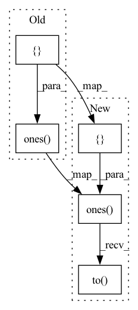

Pattern ID :38512
Before Change
reduce_mean_dims=[0])
w = torch.unsqueeze(w, 1)
w = w.repeat([1, batch_size, 1, 1])
h = torch.cat((h, torch.ones([ *h.shape[:-1], 1) ), -1)
h = torch.unsqueeze(h, -1)
p = torch.sqrt(torch.as_tensor(h.shape[2], dtype=torch.float32))
h = torch.matmul(w, h) / pAfter Change
reduce_mean_dims=[0])
w = torch.unsqueeze(w, 1)
w = w.repeat([1, batch_size, 1, 1])
h = torch.cat((h, torch.ones([*h.shape[:-1], 1]).to( self.device) ), -1)
h = torch.unsqueeze(h, -1)
p = torch.sqrt(torch.as_tensor(h.shape[2], dtype=torch.float32))
h = torch.matmul(w, h) / pIn pattern: SUPERPATTERN
Frequency: 5
Non-data size: 5
Instances Fragment ID: 110051735
Project Name: thuwzy/zhusuan-pytorch
Commit Name: ff6faab90e7e5fa352713700dfa49f9806b9ead9
Time: 2021-08-18
Author: wang-zy21@mails.tsinghua.edu.cn
File Name: examples/bayesian_neural_nets/bnn_vi.py
M Class Name: Net
N Class Name: Net
M Method Name: forward(2)
N Method Name: forward(2)
M Parent Class: BayesianNet
N Parent Class: BayesianNet
M File Name: examples/bayesian_neural_nets/bnn_vi.py
N File Name: examples/bayesian_neural_nets/bnn_vi.py
M Start Line: 40
M End Line: 40
N Start Line: 40
N End Line: 40
Before Change
self.flow = Sequential(coupling_layer + [scaling_layer])
loc = torch.zeros([in_out_dim])
scale = torch.ones([ in_out_dim)
self.sn("Logistic",
name="z",
loc=loc,After Change
self.flow = Sequential(coupling_layer + [scaling_layer])
loc = torch.zeros([in_out_dim]).to(device)
scale = torch.ones([in_out_dim]).to( device)
self.sn("Logistic",
name="z",
loc=loc, Fragment ID: 110051734
Project Name: thuwzy/zhusuan-pytorch
Commit Name: 0a074582fe0daf9fae4c2632516376f5321fb0b8
Time: 2021-08-10
Author: wang-zy21@mails.tsinghua.edu.cn
File Name: examples/normalizing_flows/nice_mnist.py
M Class Name: NICE
N Class Name: NICE
M Method Name: __init__(6)
N Method Name: __init__(5)
M Parent Class: BayesianNet
N Parent Class: BayesianNet
M File Name: examples/normalizing_flows/nice_mnist.py
N File Name: examples/normalizing_flows/nice_mnist.py
M Start Line: 27
M End Line: 28
N Start Line: 21
N End Line: 31
Before Change
e_mask = (src_input != self.config["pad_id"]).unsqueeze(1) // (B, 1, L)
d_mask = (trg_input != self.config["pad_id"]).unsqueeze(1) // (B, 1, L)
nopeak_mask = torch.ones([ 1, self.config["max_len"], self.config["max_len"], dtype=torch.bool) // (1, L, L)
nopeak_mask = torch.tril(nopeak_mask) // (1, L, L) to triangular shape
d_mask = d_mask & nopeak_mask // (B, L, L) padding false
After Change
e_mask = (src_input != self.config["pad_id"]).unsqueeze(1) // (B, 1, L)
d_mask = (trg_input != self.config["pad_id"]).unsqueeze(1) // (B, 1, L)
nopeak_mask = torch.ones([1, self.config["max_len"], self.config["max_len"]], dtype=torch.bool).to( self.config["device"]) // (1, L, L)
nopeak_mask = torch.tril(nopeak_mask) // (1, L, L) to triangular shape
d_mask = d_mask & nopeak_mask // (B, L, L) padding false
Fragment ID: 110051731
Project Name: devjwsong/recosa-dialogue-generation-pytorch
Commit Name: 2ef436259d09e9e35e6406c2751d3938109265a7
Time: 2020-08-26
Author: enflwodn@gmail.com
File Name: src/dialogue_model.py
M Class Name: DialogueModel
N Class Name: DialogueModel
M Method Name: make_mask(3)
N Method Name: make_mask(3)
M Parent Class: nn.Module
N Parent Class: nn.Module
M File Name: src/dialogue_model.py
N File Name: src/dialogue_model.py
M Start Line: 79
M End Line: 79
N Start Line: 79
N End Line: 79
Before Change
for i in range(1, seq_len):
decoder_mask = (outputs.unsqueeze(0) != pad_id).unsqueeze(1) // (1, 1, L)
nopeak_mask = torch.ones([ 1, seq_len, seq_len, dtype=torch.bool) // (1, L, L)
nopeak_mask = torch.tril(nopeak_mask) // (1, L, L) to triangular shape
decoder_mask = decoder_mask & nopeak_mask // (1, L, L) padding false
After Change
for i in range(1, seq_len):
decoder_mask = (outputs.unsqueeze(0) != pad_id).unsqueeze(1).to(device) // (1, 1, L)
nopeak_mask = torch.ones([1, seq_len, seq_len], dtype=torch.bool).to( device) // (1, L, L)
nopeak_mask = torch.tril(nopeak_mask) // (1, L, L) to triangular shape
decoder_mask = decoder_mask & nopeak_mask // (1, L, L) padding false
Fragment ID: 110051729
Project Name: devjwsong/transformer-translator-pytorch
Commit Name: 926e47e72a8c456214867c78a56f5444f476dda8
Time: 2020-05-03
Author: enflwodn@gmail.com
File Name: src/main.py
M Class Name: Manager
N Class Name: Manager
M Method Name: test(3)
N Method Name: test(3)
M Parent Class:
N Parent Class:
M File Name: src/main.py
N File Name: src/main.py
M Start Line: 119
M End Line: 146
N Start Line: 120
N End Line: 150
Before Change
reduce_mean_dims=[0])
w = torch.unsqueeze(w, 1)
w = w.repeat([1, batch_size, 1, 1])
h = torch.cat([h, torch.ones([ *h.shape[:-1], 1) ], -1)
h = torch.unsqueeze(h, -1)
p = torch.sqrt(torch.as_tensor(h.shape[2], dtype=torch.float32))
h = torch.matmul(w, h) / pAfter Change
reduce_mean_dims=[0])
w = torch.unsqueeze(w, 1)
w = w.repeat([1, batch_size, 1, 1])
h = torch.cat([h, torch.ones([*h.shape[:-1], 1]).to( self.device) ], -1)
h = torch.unsqueeze(h, -1)
p = torch.sqrt(torch.as_tensor(h.shape[2], dtype=torch.float32))
h = torch.matmul(w, h) / p Fragment ID: 110051728
Project Name: thuwzy/zhusuan-pytorch
Commit Name: 0345dcbe7f305f7d4c81b7e4ab5408172acc9ea2
Time: 2021-08-18
Author: wang-zy21@mails.tsinghua.edu.cn
File Name: examples/bayesian_neural_nets/bnn_sgmcmc.py
M Class Name: Net
N Class Name: Net
M Method Name: forward(2)
N Method Name: forward(2)
M Parent Class: BayesianNet
N Parent Class: BayesianNet
M File Name: examples/bayesian_neural_nets/bnn_sgmcmc.py
N File Name: examples/bayesian_neural_nets/bnn_sgmcmc.py
M Start Line: 54
M End Line: 54
N Start Line: 54
N End Line: 54